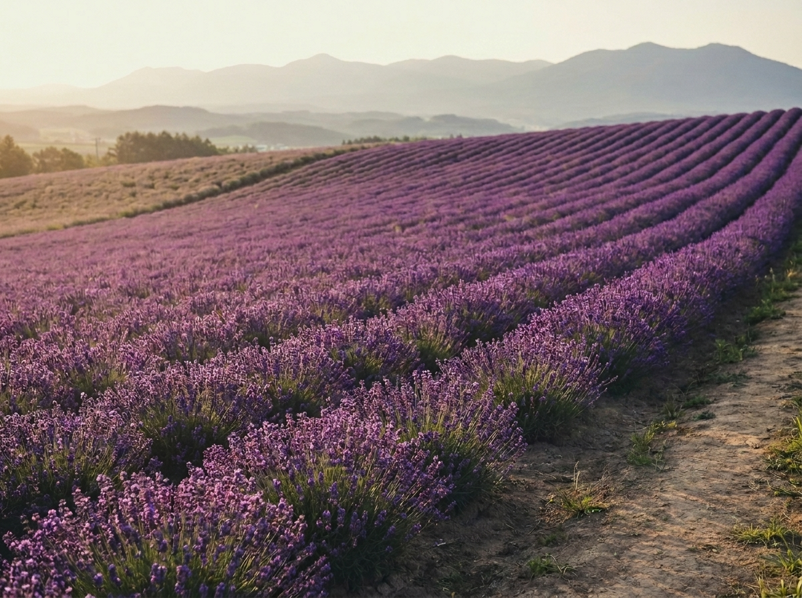
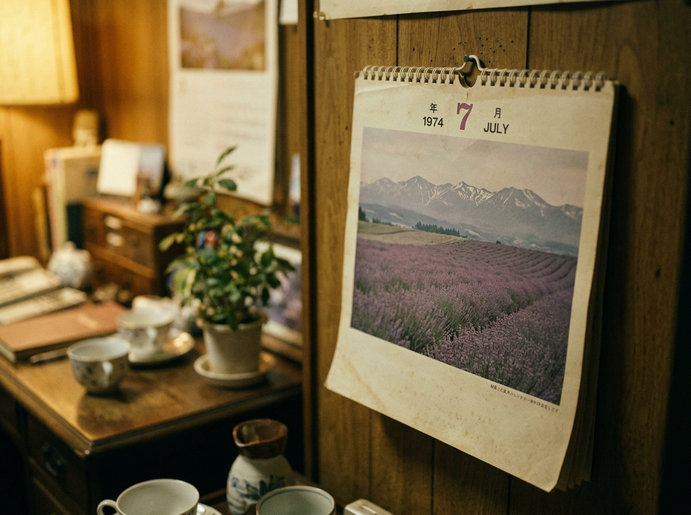
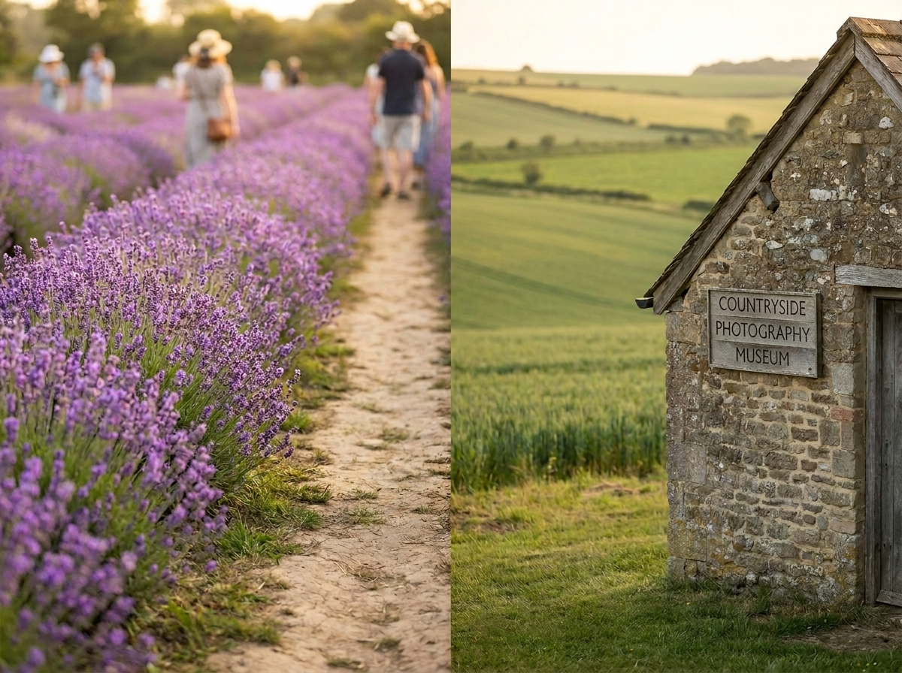
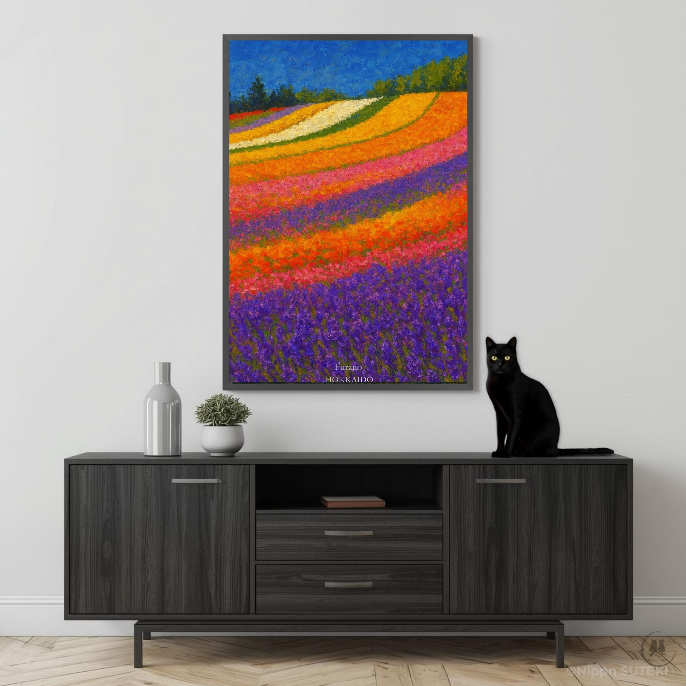

Beyond the postcard views lies a story of near-extinction — and a single calendar photograph that changed everything.
by Kiri
Every July, a valley in Hokkaido disappears under a carpet of purple. Tourists arrive by the busload, cameras raised, murmuring the same word — beautiful. I won't argue with them. It is beautiful.
But I doubt many of them know this: if not for a single stroke of fortune in the mid-1970s, this entire landscape would have vanished. Not faded. Not shrunk. Gone.
Hmph. Try to keep up — this is the part where the story stops being pretty and starts being interesting.
A Business, Not a Postcard
Here is the first thing people get wrong. This lavender was never planted for tourists. Before the war, it was a national industry — rows of purple grown strictly for their oil, an ingredient in perfume and cosmetics. Nobody was admiring the view. They were harvesting a crop.
Then came the collapse. After the war, cheap synthetic fragrance flooded in from overseas, and there was no competing with it. One by one, the lavender farms gave up and disappeared. By the 1970s, only a single farm remained standing. Even they had reached their limit. The owner had already decided: next year, the lavender fields would be plowed under and replaced with something that could actually turn a profit.
That is not a metaphor. That is a farewell notice with a date on it.
I'll admit — even I find that unsettling to sit with. An entire landscape, one season away from erasure, and almost nobody knew to mourn it in advance.

A view that very nearly stopped existing — kept alive by a signature that was never signed.
One Photograph, One Winter
The year before the fields were meant to disappear, a landscape photographer took a single photograph. A slope drenched in purple, the snow-capped ridge of a nearby mountain range standing behind it in cold contrast. Nothing staged. Nothing dramatic. Just light, color, and geography, arranged the way they happened to be.
That photograph was selected for a nationally distributed railway calendar the following year.
I won't pretend to be sentimental about this, but — a calendar. That's all it took. It hung on office walls and kitchen walls across the country, and by the following summer, people who had never heard of this valley were boarding trains to see it with their own eyes.
The fields that were one signature away from disappearing became, instead, a place people crossed the country to visit. Not through marketing. Not through a five-year plan. Through one photograph, seen by the right people, at exactly the right moment.
If that isn't proof that a single image can outweigh a decade of decline, I don't know what is.

One calendar page, hung on walls across the country — and a valley was saved by it.
What You're Actually Standing In
So understand this, when you walk through these lavender fields: you are not looking at nature's accident, and you are not looking at a tourist attraction built from scratch. You are standing inside the result of one farmer's stubbornness and one photographer's eye, meeting at the last possible moment.
If you want to see where it began, seek out the valley's last surviving lavender farm — the one that refused to disappear.
And if you want to understand why it mattered, a short trip further will bring you to a small photography museum built around that photographer's work. Standing in front of the original print, you'll understand something the postcards never explain: this wasn't inevitable. It was almost lost.
Provence has its own lavender, its own centuries of quiet cultivation. This valley's story is different — sharper, more recent, closer to collapse than to tradition. A mid-century gamble that happened to pay off.
I suppose... it's worth remembering that beauty and survival aren't always the same story. Sometimes one barely rescues the other. Don't forget that part, just because the view is nice.

Where it began, and where you can still see why it mattered.
Not Just Purple Anymore
One more thing, before you start planning around a single shade of purple.
Lavender blooms for roughly two weeks. That's it. A landscape built on two weeks of color is not a sustainable one, and eventually, someone worked that out. So the slopes were replanted — not replaced, layered. Rows of other flowers, each blooming at a slightly different point in the season, staggered deliberately across the same hillside.
What started as practical plots for seed collection quietly became something closer to design. Color arranged in bands along the slope, timed so that as one shade fades, another is already stepping in behind it. The bloom season stretches now from late spring into early autumn instead of collapsing after a fortnight.
So no — it isn't only a purple carpet anymore. By early summer, the same hills carry stripes of yellow, pink, white, and red running alongside the lavender, less like a single crop and more like a landscape someone composed on purpose.
I'll admit, that part I find genuinely impressive. Turning a two-week problem into a four-month solution isn't luck. That's just good work.

Available now as an art poster — the Furano hills, dressed in every color at once.
Summer here wears every color at once. Winter wears almost none — just white, and the particular silence that comes with it. It's tempting to treat those as two different places.
They aren't. The heavy snow that buries these same slopes every winter doesn't just disappear come spring — it melts, soaks into the ground, and becomes the water that feeds the vivid bloom you see in summer. Furano's multicolor summer and its monotone winter aren't opposites. They're the same cycle, viewed from two different months. One season quietly makes the other possible.
That, more than any single view, is the real value of this place.
...Speaking of winter — Sari's already talking my ear off about it. Something about the snow here being unusually dry, apparently. She'll tell you herself, next time.
And if you want to bring a little piece of the summer side home first — our art poster captures it beautifully. The kind of thing worth putting on a wall and actually looking at now and then.